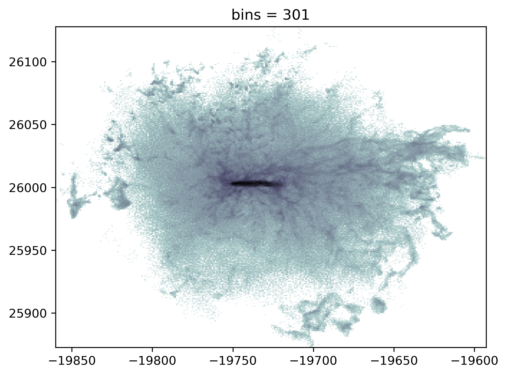

Plot test22
The following modules installed.
- import illustris_python as il
- import numpy as np
- import pandas as pd
- import os
- import matplotlib.pyplot as plt
- from matplotlib.colors import LogNorm
- import glob
data = np.load("./AllCutData/subhalo342447_data.npz")
x, y, z, vx, vy, vz, m = data["x"], data["y"], data["z"], data["vx"], data["vy"], data["vz"], data["Masses"]
# basePath = "/home/nishihama/data/TNG50-1/output/"
# sunhaloData = il.snapshot.loadSubhalo(basePath, 99, 342447, 4, fields=["Coordinates","Masses","Velocities"])
# x,y,z = sunhaloData["Coordinates"].T
# m = sunhaloData["Masses"]
# vx,vy,vz = sunhaloData["Velocities"].T
# x,y,z,m = np.hstack((x,_x)), np.hstack((y,_y)), np.hstack((z,_z)), np.hstack((m,_m))
# vx,vy,vz = np.hstack((vx,_vx)), np.hstack((vy,_vy)), np.hstack((vz,_vz))
rot = np.load("subhalo342447_rot_edgeon.npy")
x, y, z = rot @ np.array([x, y, z])
vx, vy, vz = rot @ np.array([vx, vy, vz])
velocity_bins = 301
xmin, xmax = np.min(x), np.max(x)
ymin, ymax = np.min(y), np.max(y)
plt.figure(dpi=300)
plt.title(f"bins = {velocity_bins}")
xbins = np.linspace(xmin, xmax, velocity_bins)
ybins = np.linspace(ymin, ymax, velocity_bins)
hist_vy, xed, yed = np.histogram2d(x, y, bins=(xbins, ybins), weights=vy)
hist_, xed, yed = np.histogram2d(x, y, bins=(xbins, ybins))
hist_vx, xed, yed = np.histogram2d(x, y, bins=(xbins, ybins), weights=vx)
xed, yed = np.meshgrid(xbins[1:],ybins[1:])
bins = 301
xbins = np.linspace(xmin, xmax, bins)
ybins = np.linspace(ymin, ymax, bins)
hist_m, xed_m, yed_m = np.histogram2d(x, y, bins=(xbins, ybins), weights=m)
hist_vy = hist_vy/hist_
hist_vx = hist_vx/hist_
hist_m[hist_m==0] = hist_m[hist_m>0].min()
plt.pcolormesh(xed_m,yed_m,hist_m.T,norm=LogNorm(),cmap="bone_r")
# plt.colorbar().set_label(r"velocity $y$ (km/s)")
plt.streamplot(xed,yed,hist_vx.T,hist_vy.T,linewidth=0.2,density=20,arrowstyle="-",color="binary")
# plt.plot(_x,_y,".",color="white",markersize=0.01,alpha=1)
plt.ylabel("ckpc/h")
plt.xlabel("ckpc/h")
plt.show()
/tmp/ipykernel_3075727/2737687129.py:41: RuntimeWarning: invalid value encountered in divide
hist_vy = hist_vy/hist_
/tmp/ipykernel_3075727/2737687129.py:42: RuntimeWarning: invalid value encountered in divide
hist_vx = hist_vx/hist_
---------------------------------------------------------------------------
ValueError Traceback (most recent call last)
Cell In[40], line 48
45 plt.pcolormesh(xed_m,yed_m,hist_m.T,norm=LogNorm(),cmap="bone_r")
46 # plt.colorbar().set_label(r"velocity $y$ (km/s)")
---> 48 plt.streamplot(xed,yed,hist_vx.T,hist_vy.T,linewidth=0.2,density=20,arrowstyle="-",color="binary")
51 # plt.plot(_x,_y,".",color="white",markersize=0.01,alpha=1)
53 plt.ylabel("ckpc/h")
File ~/anaconda3/lib/python3.10/site-packages/matplotlib/pyplot.py:2926, in streamplot(x, y, u, v, density, linewidth, color, cmap, norm, arrowsize, arrowstyle, minlength, transform, zorder, start_points, maxlength, integration_direction, broken_streamlines, data)
2919 @_copy_docstring_and_deprecators(Axes.streamplot)
2920 def streamplot(
2921 x, y, u, v, density=1, linewidth=None, color=None, cmap=None,
(...)
2924 integration_direction='both', broken_streamlines=True, *,
2925 data=None):
-> 2926 __ret = gca().streamplot(
2927 x, y, u, v, density=density, linewidth=linewidth, color=color,
2928 cmap=cmap, norm=norm, arrowsize=arrowsize,
2929 arrowstyle=arrowstyle, minlength=minlength,
2930 transform=transform, zorder=zorder, start_points=start_points,
2931 maxlength=maxlength,
2932 integration_direction=integration_direction,
2933 broken_streamlines=broken_streamlines,
2934 **({"data": data} if data is not None else {}))
2935 sci(__ret.lines)
2936 return __ret
File ~/anaconda3/lib/python3.10/site-packages/matplotlib/__init__.py:1442, in _preprocess_data.<locals>.inner(ax, data, *args, **kwargs)
1439 @functools.wraps(func)
1440 def inner(ax, *args, data=None, **kwargs):
1441 if data is None:
-> 1442 return func(ax, *map(sanitize_sequence, args), **kwargs)
1444 bound = new_sig.bind(ax, *args, **kwargs)
1445 auto_label = (bound.arguments.get(label_namer)
1446 or bound.kwargs.get(label_namer))
File ~/anaconda3/lib/python3.10/site-packages/matplotlib/streamplot.py:220, in streamplot(axes, x, y, u, v, density, linewidth, color, cmap, norm, arrowsize, arrowstyle, minlength, transform, zorder, start_points, maxlength, integration_direction, broken_streamlines)
217 line_colors.append(color_values)
218 arrow_kw['color'] = cmap(norm(color_values[n]))
--> 220 p = patches.FancyArrowPatch(
221 arrow_tail, arrow_head, transform=transform, **arrow_kw)
222 arrows.append(p)
224 lc = mcollections.LineCollection(
225 streamlines, transform=transform, **line_kw)
File ~/anaconda3/lib/python3.10/site-packages/matplotlib/_api/deprecation.py:454, in make_keyword_only.<locals>.wrapper(*args, **kwargs)
448 if len(args) > name_idx:
449 warn_deprecated(
450 since, message="Passing the %(name)s %(obj_type)s "
451 "positionally is deprecated since Matplotlib %(since)s; the "
452 "parameter will become keyword-only %(removal)s.",
453 name=name, obj_type=f"parameter of {func.__name__}()")
--> 454 return func(*args, **kwargs)
File ~/anaconda3/lib/python3.10/site-packages/matplotlib/patches.py:4131, in FancyArrowPatch.__init__(self, posA, posB, path, arrowstyle, connectionstyle, patchA, patchB, shrinkA, shrinkB, mutation_scale, mutation_aspect, **kwargs)
4128 kwargs.setdefault("joinstyle", JoinStyle.round)
4129 kwargs.setdefault("capstyle", CapStyle.round)
-> 4131 super().__init__(**kwargs)
4133 if posA is not None and posB is not None and path is None:
4134 self._posA_posB = [posA, posB]
File ~/anaconda3/lib/python3.10/site-packages/matplotlib/_api/deprecation.py:454, in make_keyword_only.<locals>.wrapper(*args, **kwargs)
448 if len(args) > name_idx:
449 warn_deprecated(
450 since, message="Passing the %(name)s %(obj_type)s "
451 "positionally is deprecated since Matplotlib %(since)s; the "
452 "parameter will become keyword-only %(removal)s.",
453 name=name, obj_type=f"parameter of {func.__name__}()")
--> 454 return func(*args, **kwargs)
File ~/anaconda3/lib/python3.10/site-packages/matplotlib/patches.py:82, in Patch.__init__(self, edgecolor, facecolor, color, linewidth, linestyle, antialiased, hatch, fill, capstyle, joinstyle, **kwargs)
78 if edgecolor is not None or facecolor is not None:
79 _api.warn_external(
80 "Setting the 'color' property will override "
81 "the edgecolor or facecolor properties.")
---> 82 self.set_color(color)
83 else:
84 self.set_edgecolor(edgecolor)
File ~/anaconda3/lib/python3.10/site-packages/matplotlib/patches.py:374, in Patch.set_color(self, c)
361 def set_color(self, c):
362 """
363 Set both the edgecolor and the facecolor.
364
(...)
372 For setting the edge or face color individually.
373 """
--> 374 self.set_facecolor(c)
375 self.set_edgecolor(c)
File ~/anaconda3/lib/python3.10/site-packages/matplotlib/patches.py:359, in Patch.set_facecolor(self, color)
351 """
352 Set the patch face color.
353
(...)
356 color : color or None
357 """
358 self._original_facecolor = color
--> 359 self._set_facecolor(color)
File ~/anaconda3/lib/python3.10/site-packages/matplotlib/patches.py:347, in Patch._set_facecolor(self, color)
345 color = mpl.rcParams['patch.facecolor']
346 alpha = self._alpha if self._fill else 0
--> 347 self._facecolor = colors.to_rgba(color, alpha)
348 self.stale = True
File ~/anaconda3/lib/python3.10/site-packages/matplotlib/colors.py:299, in to_rgba(c, alpha)
297 rgba = None
298 if rgba is None: # Suppress exception chaining of cache lookup failure.
--> 299 rgba = _to_rgba_no_colorcycle(c, alpha)
300 try:
301 _colors_full_map.cache[c, alpha] = rgba
File ~/anaconda3/lib/python3.10/site-packages/matplotlib/colors.py:374, in _to_rgba_no_colorcycle(c, alpha)
370 raise ValueError(
371 f"Invalid string grayscale value {orig_c!r}. "
372 f"Value must be within 0-1 range")
373 return c, c, c, alpha if alpha is not None else 1.
--> 374 raise ValueError(f"Invalid RGBA argument: {orig_c!r}")
375 # turn 2-D array into 1-D array
376 if isinstance(c, np.ndarray):
ValueError: Invalid RGBA argument: 'binary'
